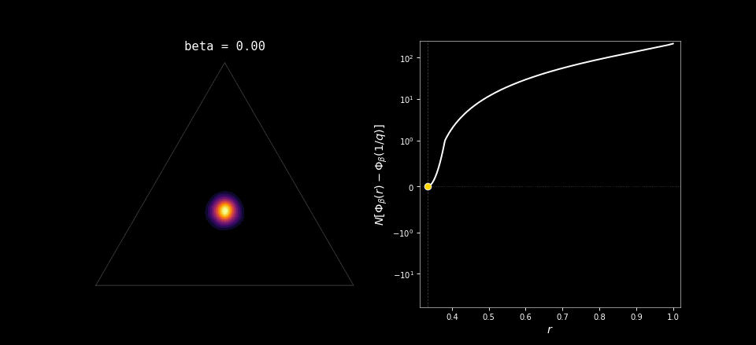
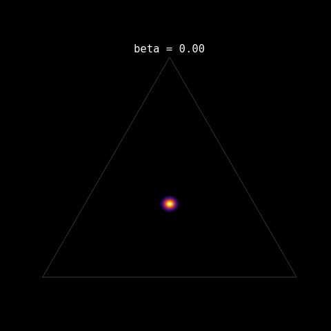

The mean-field Potts model is a very simple model with a first order phase transition; for Monte-Carlo simulation, it is especially interesting since this first order phase transition implies that standard tempering strategies such as parallel-tempering or sequential-monte-carlo are inefficient. Increasing the number of intermediate temperature just does not help (much) producing samples at low temperatures (Woodard, Schmidler, and Huber 2009; Bhatnagar and Randall 2004)
Potts model
Consider the Potts model with \(q\) colors on the complete graph with \(N\) vertices. A configuration is \(\sigma=(\sigma_1,\dots,\sigma_N)\) with \(\sigma_i\in\{1,\dots,q\}\). Define the energy \[ E(\sigma)\;=\;-\frac{1}{2N}\sum_{i,j=1}^N \mathbf 1\{\sigma_i=\sigma_j\}. \] At inverse temperature \(\beta\), the Boltzmann distribution is \(\mu_\beta(\sigma)=e^{-\beta E(\sigma)} / Z_\beta\). On the complete graph, the only relevant macroscopic variable is the empirical proportions vector \[ \rho=(\rho_1,\dots,\rho_q),\qquad \rho_a=\frac1N\bigl|\{i:\sigma_i=a\}\bigr|. \]
so that \(\sum_{a=1}^q \rho_a=1\). A short computation rewrites the energy in terms of \(\rho\): \[ E(\rho)= -\frac{N}{2}\sum_{a=1}^q \rho_a^2, \] up to an additive constant irrelevant for Gibbs weights. The number of configurations with a given \(\rho\) is \(\exp\{N \, H(\rho)+o(N)\}\), where \(H(\rho)=-\sum_a \rho_a\log\rho_a\) is the Shannon entropy. Putting energy and entropy together, typical samples from \(\mu_\beta\) concentrate near minimizers of the mean-field free-energy functional: \[ \Phi_\beta(\rho) =\sum_{a=1}^q \rho_a\log\rho_a -\frac{\beta}{2}\sum_{a=1}^q \rho_a^2 \]
constrained to the probability simplex. Everything that follows is geometry: how the minima of \(\Phi_\beta\) evolve as the inverse temperature \(\beta\) varies.
Local minima: Two features make the analysis almost trivial. First, permuting colors leaves \(\Phi_\beta\) unchanged. Second, a stationary point under the simplex constraint satisfies a Lagrange-multiplier condition \[ \log\rho_a+1-\beta\rho_a=\lambda \] for \(a=1,\dots,q\). Hence each coordinate \(\rho_a\) must solve the same scalar equation. From this, one finds that all local minima are necessarily of the following two types:
Disordered point (uniform): \[ \rho^{\mathrm{dis}}=\Bigl(\frac1q,\dots,\frac1q\Bigr), \] always a stationary point.
Ordered points (one dominant color, the rest equal): \[ \rho^{\mathrm{ord}}(r)=\Bigl(r,\ \underbrace{\frac{1-r}{q-1},\dots,\frac{1-r}{q-1}}_{q-1\ \text{times}}\Bigr) \] for some dominant proportion \(r>1/q\). There are \(q\) such points by choosing which color is dominant.
The remaining work is algebra: determine, as a function of \(\beta\), when ordered stationary points exist, and which of the stationary points are local minima versus saddles. The details are routine and add little insight.
The phase diagram in \(\beta\)
Assume \(q\ge 3\). Then the model exhibits a first-order transition, and metastability appears on both sides. There are two key inverse temperatures:
- Spinodal threshold \(\beta_s\): the ordered stationary points appear as local minima.
- Coexistence threshold \(\beta_c\): the disordered minimum and the ordered minimum have equal free energy.
For the normalization above, the coexistence point is \[ \beta_c=\frac{2(q-1)\log(q-1)}{q-2}. \]
The geometry of \(\Phi_\beta\) splits into three regimes.
High temperature: \(\beta<\beta_s\)
- Critical points: only the uniform point \(\rho^{\mathrm{dis}}\).
- Landscape: \(\Phi_\beta\) is strictly minimized at \(\rho^{\mathrm{dis}}\).
- Meaning: entropy dominates; colors mix.
Metastable coexistence: \(\beta_s<\beta<\beta_c\)
- Critical points: the uniform point remains a (global) minimum, but there are also \(q\) ordered local minima \(\rho^{\mathrm{ord}}\) and corresponding saddles separating them from the uniform basin.
- Landscape: multiple basins exist, but the uniform basin is lowest.
Low temperature: \(\beta>\beta_c\)
- Critical points: the ordered minima become the global minima; the uniform point persists as a local minimum (until it eventually disappears at a second spinodal on the low-temperature side).
- Landscape: the roles swap: ordered basins are deepest; the uniform basin becomes metastable.
- Meaning: energy dominates; one color wins.
At \(\beta=\beta_c\), the global minimizer changes discontinuously (as can be seen in the animation at the start of these notes): the equilibrium state jumps from \(\rho^{\mathrm{dis}}\) to an ordered vector with one strictly larger coordinate. This is in contrast with the (mean-field) Curie–Weiss Ising model (\(q=2\)), where the ordered minimizers bifurcate continuously from the disordered one, i.e. a second-order transition. For \(q\ge 3\), ordered minima appear while the uniform minimum is still globally optimal, and the eventual swap of global minima happens with a jump. That single change in the geometry of \(\Phi_\beta\) is the entire origin of the first-order transition and the metastable window.
